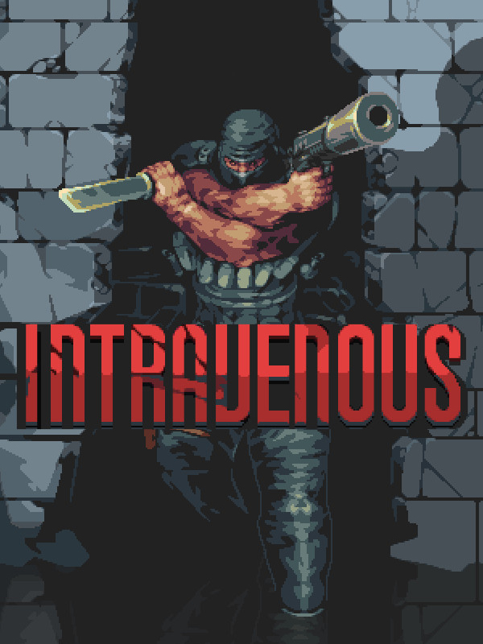

Intravenous
Intravenous
Detalhes
|  | |
| Tempo de jogo | Não Jogado |
| Última Atividade | Nunca |
| Adicionado | 11/02/2025 13:17:42 |
| Modificado | 11/02/2025 13:45:28 |
| Status de Conclusão | Not Played |
| Biblioteca | Steam |
| Fonte | Steam |
| Plataforma | PC (Windows) |
| Data de Lançamento | 26/07/2021 |
| Pontuação da Comunidade | 71 |
| Avaliação da crítica | |
| Pontuação do Usuário | |
| Gênero | Indie Shooter Tactical |
| Desenvolvedor | Explosive Squat Games Roman Glebenkov |
| Editor | HypeTrain Digital Roman Glebenkov |
| Funções | Single Player |
| Links | Steam YouTube Discord GOG Twitch Epic |
| Tag | |
Descrição
UMA CARTA DE AMOR PARA OS PRIMEIROS JOGOS SPLINTER CELL
Você acabou de entrar no armazém pela ventilação enquanto ouve vozes de fora. Eles sabem que você está aqui. Alguém deve ter avisado.
Você continua nas sombras. Você atira nas luzes, desliga disjuntores e arromba portas. Você é um assassino silencioso.
Você distrai os guardas jogando garrafas ou imitando as vozes de suas esposas. Uma por uma, você vai apagando as luzes.

Merda. Você foi comprometido. Você atira na fechadura da porta seguinte e entra com tudo. Em um tiroteio cheio de adrenalina você elimina seu alvo e mal consegue escapar. Bom trabalho!

Entre no mundo de Intravenous como Steve Robbins - um homem decidido a se vingar depois de perder seu irmão para viciados miseráveis. Mergulhe fundo no mundo do crime coberto pela pela escuridão ou vá armado até os dentes, com armas em punho e protegido por armaduras.
- Furtividade à moda antiga. Sua visibilidade depende da iluminação do ambiente e cada passo que você dá faz barulho.
- Ação emocionante. Uma jogabilidade furtiva divertida não exclui a diversão com armas de fogo. O Intravenous foi meticulosamente projetado para oferecer furtividade para quem procura por ela, bem como troca de tiros sem freios para aqueles ansiosos por um tiroteio.
- IA reativa. Seus inimigos farão mais do que apenas correr em sua direção. Se encontrarem um cadáver, irão alertar seus amigos na esperança de te encontrar. Se eles ouvirem você por perto, irão investigar. Se eles o virem, abrirão fogo. Se estiverem desarmados, tentarão encontrar seus comparsas e avisá-los sobre você.
- Inimigos capazes. Os inimigos se protegem durante os tiroteios, usam lanternas no escuro e usam o rádio em atividades suspeitas. Qualquer passo em falso que você der resultará na resposta apropriada dos seus oponentes.
- Muitas armas. Múltiplas armas, cada uma com seu manuseio único. Cada uma funciona melhor em uma situação específica. Você com certeza encontrará sua favorita aqui.
- Escolha o seu armamento. Escolha um rifle, uma pistola e um colete à prova de balas para estar pronto para o combate, ou apenas uma pistola e nada mais, para ser rápido, ágil e silencioso - pronto para a improvisação.
- Adapte-se ao ambiente. Apague as luzes, rasteje através de dutos de ventilação, desligue os disjuntores, jogue garrafas para distrair seus inimigos, arrombe as portas para encontrar maneiras alternativas de entrar - ou simplesmente atire na fechadura da porta e entre com tudo.
- Uma história de coragem. Steve Robbins perdeu a pessoa mais importante de sua vida - seu irmão. Com a ajuda de uma pessoa misteriosa que afirma ter sofrido um destino semelhante, ele decide que é hora de resolver o problema por conta própria depois que a polícia aparece de mãos vazias. Nada é tão claro quanto parece.
- FPS sem limites. Tela de 60hz? Sim. 144hz? Sem problemas. Desfrute da ação rápida ou furtividade empolgante na sua taxa de atualização de monitor preferida.